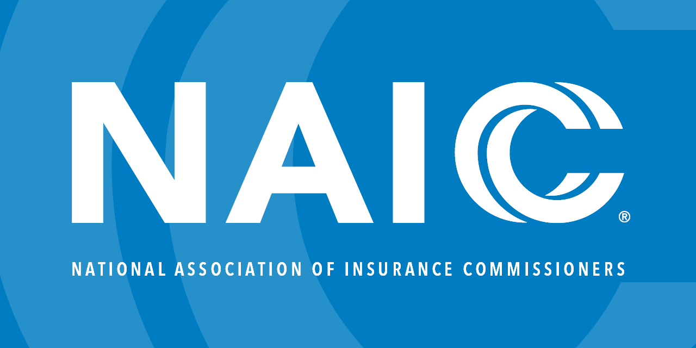

UX Case Studies

Impact: Task success ↑ 40% → 100% (n=10 usability test)
View Case StudyImpact: Our redesigned flow resolved usability issues, proving more intuitive and yielding a 92% success rate for the manual check-in task.
View Case Study

Impact: Engagement +15% • Bounce −5% • Task time −20% (n=7) — shipped to production on the NAIC Drupal CMS
View Case StudyImpact: Delivered a production-ready hi-fi prototype and developer-ready specs; validated via competitive research, heuristic evaluation, and peer usability sessions.
View Case Study